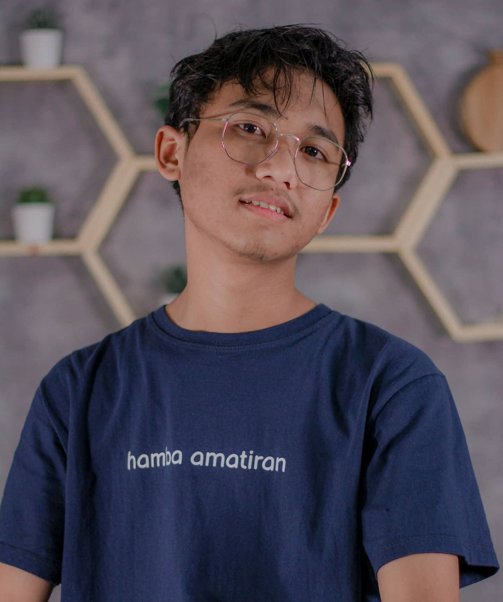

Congratulations you have met me, I am Ferdi, a computer wizard. Don't be surprised if I use a strange hat, jeans, hoodie and laptop as a magic wand. I'm a middle school kid who has computer wizardry so don't be surprised if I carry a laptop everywhere.I'm a middle school kid who has computer wizardry so don't be surprised if I carry a laptop everywhere. I always use laptops for fun or to create something sophisticated for the future, if I want
Why a witch? because my laptop can bewitch other, more sophisticated systems, there's no need to discuss this.Now let's meet the computer expert who always takes him everywhere

I'm Ferdi I live in Indonesia In Central Java, I live with my mother, older brother and two younger brothers, where is my father? My father has been called by God (: , but now I am the second child in the family.My older brother also has social media, so please visit social media my brother.
How strange, why calling myself a wizard is very strange, this is the world of computers that can change everything, if you want to know, I'm a cyber security and software engineer.
So, how is it ?? do you know who I am? yes, that's me so don't be surprised there is someone who wears jeans with a hoodie and a laptop that he always carries everywhere because a laptop is like a stick that can change and create something that can be made or impossible, That's all from me, Ferdi Software engineering and Cyber Security bye